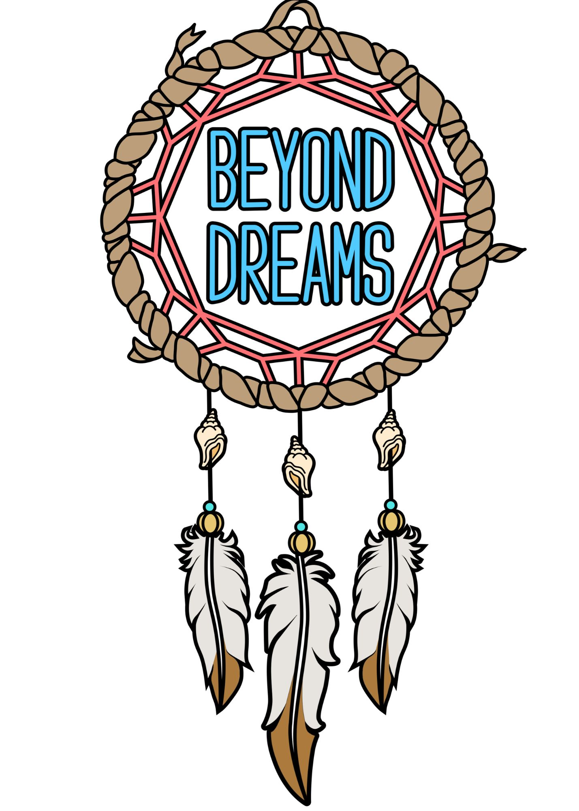
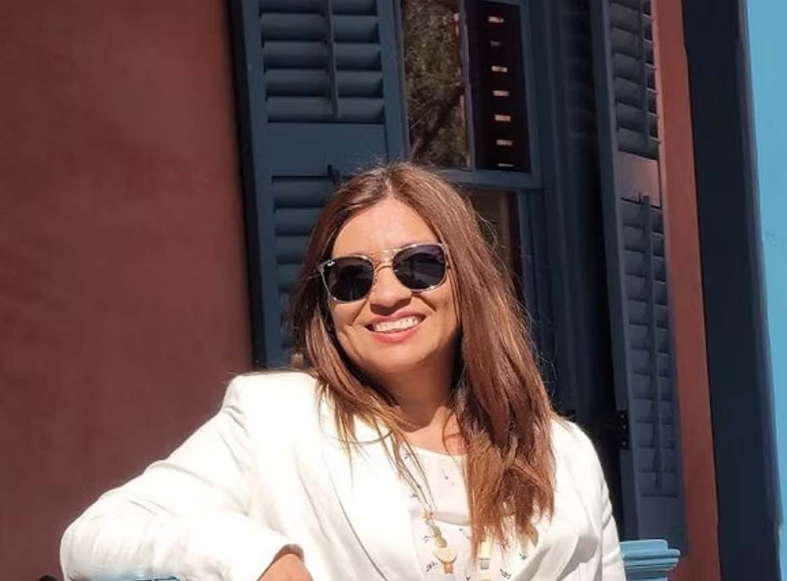
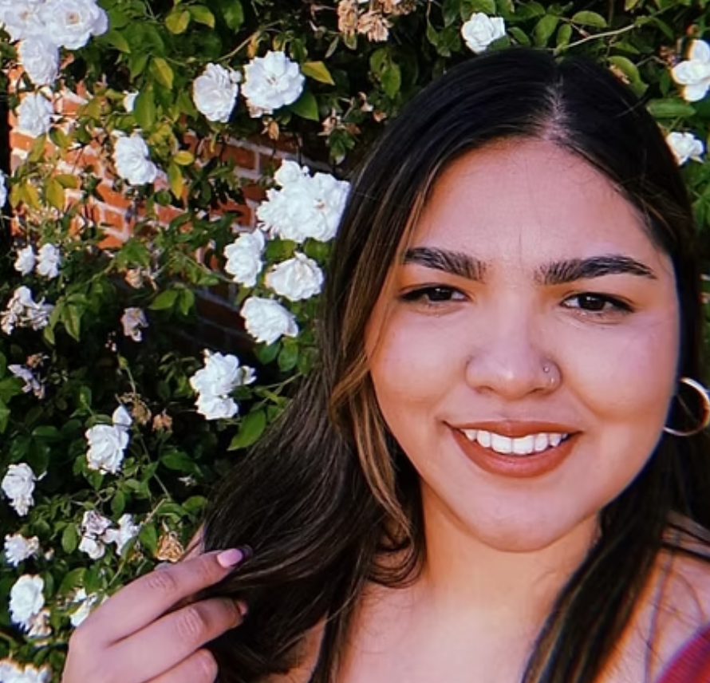
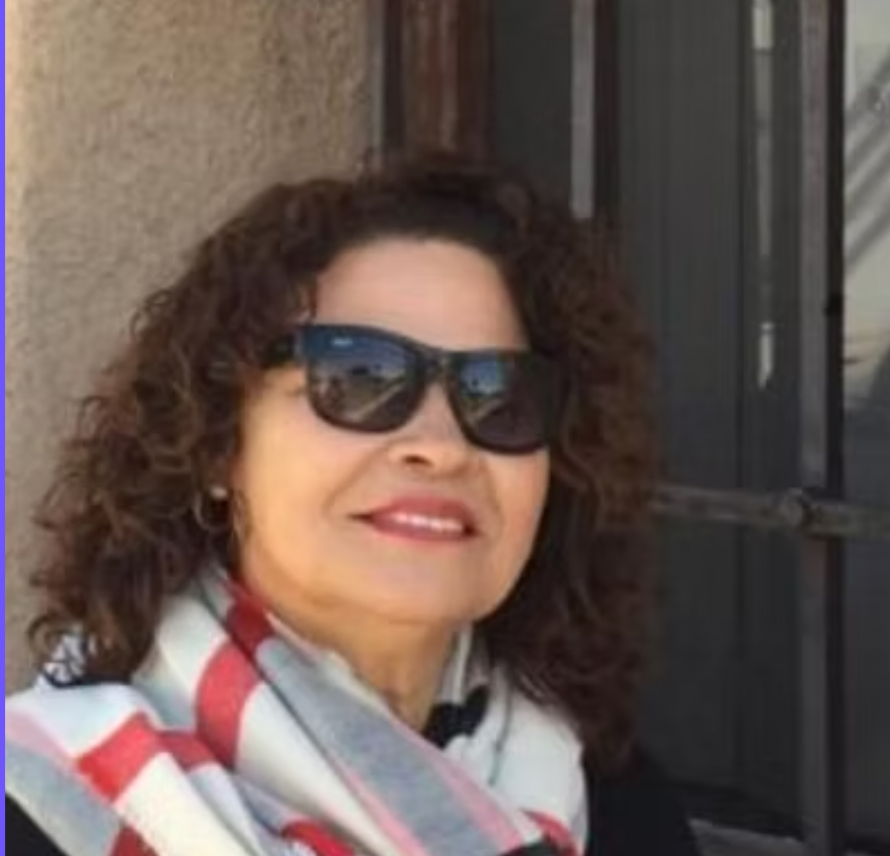

Isela Z. Gastelum, Director

Isela is founder and part of the Tucson Cooperative Network, and founder of BeyondDreams.She has been volunteering for 18 years, she started in her children's schools and participated in different workshops of organizations, obtaining certification in different branches of rights, facilitation and emotion management. Isela is now directing the BeyondDreams project using her acquired knowledge, highlighting potentials, giving effective information and creating safe spaces for our young individuals in the community. Isela is happy to be part of a Great Team and provide greater equity and accessible resources for our new generations.
Joselin Garcia, Co-Director and Board Member

Joselin Graduated from Grand Canyon University, with Bachelors of Science in Marketing and Applied Advertising. She has volunteered in the community and is part of the founding Beyond Dreams project in 2021. After graduating she has been part of the Beyond Dreams team as marketing and student coordinator. Through past experiences of working at Pima Community College Immigrant and Refugee Student Resource Center, she has been able to apply her professional and personal experience to assist the students at Beyond Dreams.
Genoveva Martinez, Board Member

Genoveva has had the pleasure to be part and founder at the Tucson Cooperative Network for 3 years. In which she has been able to develop new skills through workshops and training. She has also been supporting Beyond Dreams from the start and collaborated in different ways like; creating cooperatives, training, planning and organizing. It has been one of the best experiences she has had in events and developing the value and skills of young people in the community. Giving them tools to ensure a better future in all education and entrepreneurship. Genoveva is happy and grateful to be part of this wonderful project, where we support young students without the same privileges as others.